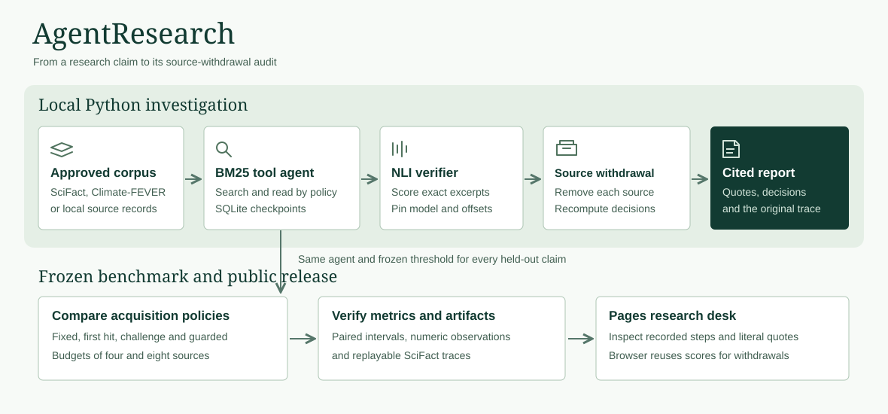

Research desk
Read the evidence behind a claim. Withdraw a source to see what changes.
Export
Loading the recorded investigation…
Benchmark results
Four policies investigate the same held-out claims under the same source budgets.
Loading measured results…
Frozen protocol and source hashes
SHA-256 identifies the exact bytes used for the published release.
- Evaluation protocol
- e5e11ae082d3a179d1c0fe55b79f059b482bfb000266a2364fc15774e2ea0ed2
- Frozen calibration
- 528a153bef5bab0b02443c7b9bb5a206a2f65bdbbb136d30f56a6b9b2741e55e
- SciFact source archive
- 11c621288d41ac144d29b13b0f8503b3820b7d6e8b1f6ff24dff335c196d76be
- Climate-FEVER source file
- 8a4b9032d861be482ffb49dddfd283ffa6089e654f1e968040011882c5eb6e0b
How the investigation works
The local agent retrieves and scores source sentences. This desk replays the resulting record.

What the desk checks
Import a portable JSON bundle up to 5 MiB. The desk checks event hashes, source identities, literal quotes, model identifiers and decisions. Reproducing retrieval against the full corpus requires the CLI. A consistent record cannot authenticate the model execution.
Evidence and attribution
Model scores are uncalibrated. Annotations can miss relevant evidence, and different sources can repeat a finding. SciFact claims and annotations are CC BY 4.0. S2ORC abstracts are ODC-By 1.0. Climate-FEVER contributes numerical results.